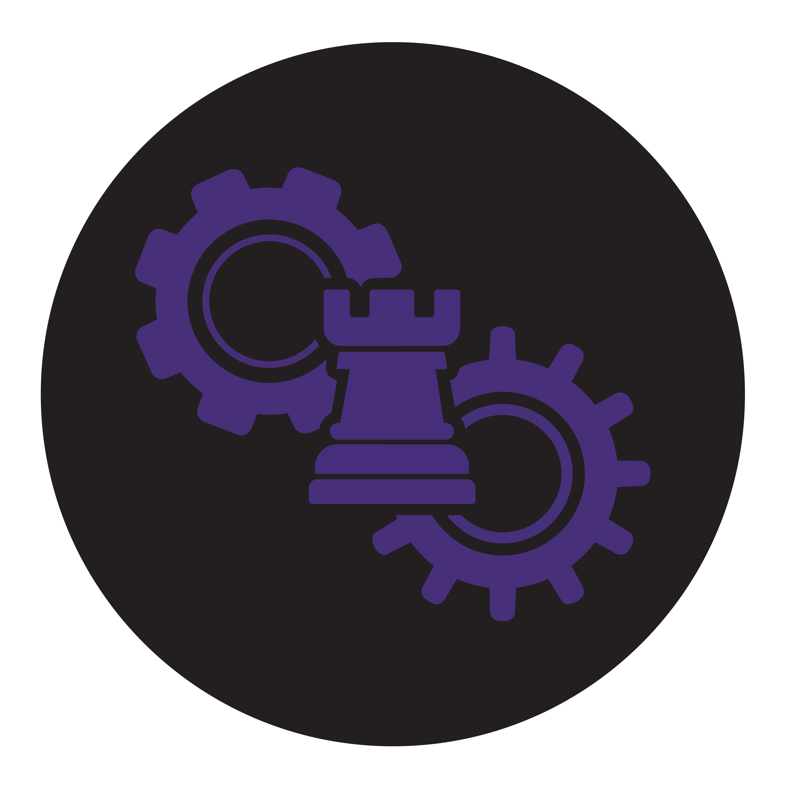

“We combine these files by hand every month.”
Reporting consolidation, data cleanup, reconciliation, and maintainable Excel or Power Query reports.

rook.worksAdministrative systems & reporting / Piedmont Triad, NC
Rookworks helps teams improve spreadsheet reporting, information intake, and recurring administrative processes—with documentation and staff handoff.
Discuss a process you need improvedA specific recurring problem, a defined scope, and tools that fit your operation.
Reporting consolidation, data cleanup, reconciliation, and maintainable Excel or Power Query reports.
Structured intake and automation that carry information into the next step.
Forms, receipts, routing, and review views using Microsoft 365 and Excel.
Workbook repair, clearer procedures, operating instructions, and staff handoff.
Projects completed by Jacob Herrmann in an employment role. These examples describe his individual experience.
Built with Excel, VBA, and Power Query.
A training operation kept tens of thousands of manually entered attendance records in a slow workbook. Compiling class records meant repeated entry into the master log.
Rebuilt attendance capture with validated lists and automatic time calculations. Submission produced human-readable copies for the specialist and department, plus structured CSV files that Power Query consolidated into the master log.
Approximately 10 hours per week saved in manual master-log entry.Reported by the Training Specialist.
Student, trainer, and course information; department and organization attribution; calculated class duration; emailed attendance copies for independent retention; and shared-drive CSV storage feeding the master workbook.
Built with Microsoft Forms, Power Automate, Teams, and Excel.
Each preference cycle, support staff compiled emailed requests and created a spreadsheet ranking employees by seniority. Updated preferences added more sorting work.
Built separate career and non-career forms with timestamped submissions, employee receipts, and Teams notifications. Staff pasted submission data into a prepared workbook that hid superseded entries and sorted current preferences by seniority.
A repeatable submission and review process, still used for the June 2026 preference cycle.
Helper tables supplied seniority order. A rollup sheet referenced the prepared tables so staff could select a department or organization and see interested employees grouped by career status and ordered by seniority.
We start by reviewing the process, representative files, and the people who use them. The scope sets out the deliverables, access requirements, and what a successful result needs to do.
Send a brief description of the process, your timeline, and any purchasing requirements. We’ll identify what needs review before preparing a scope and quote.
procurement@rook.works